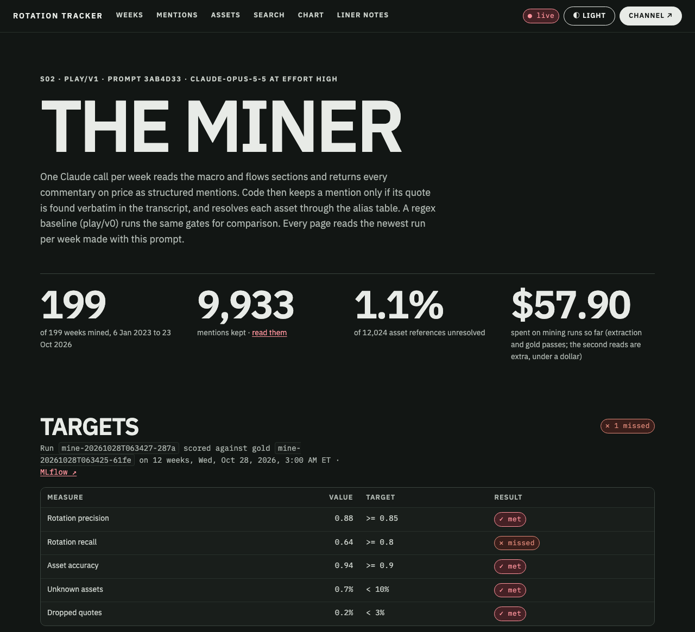
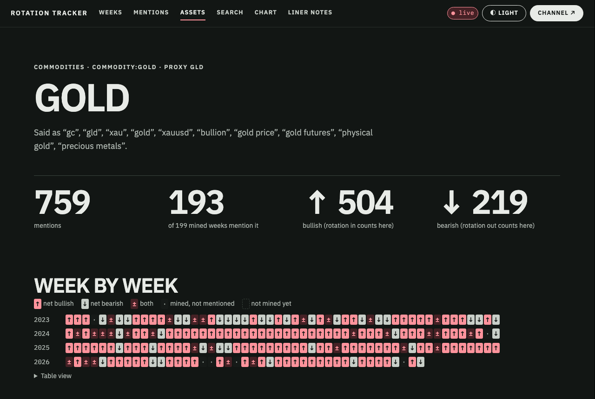
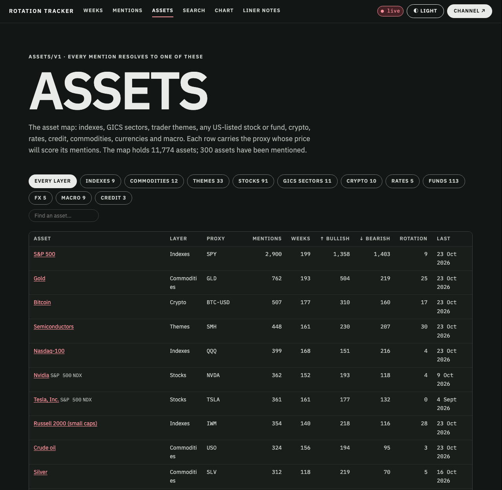

text-mining-spike (not committed yet)
The miner has read all 199 weeks: every call located to the second, one target short on rotation
Every piece of the plan is in place: the asset map, the regex baseline, the Claude extractor, the provenance gate, the gold set, the eval, and five new viewer pages. On the twelve gold weeks, Claude Opus 5.5 at effort high finds about 46 calls a week, drops almost none for a missing quote, and resolves 99% of the assets it names. It meets four of your five targets and misses the fifth, rotation recall, at 0.64 against 0.80: a question about what counts as rotation, which your spot-checks can settle. You chose to keep the strict definition, treat the thresholds as targets rather than a gate, and run every week. The backfill is done: 199 of 199 weeks mined, 9,933 calls, $32.75 for the 187 new weeks.
rt mine eval reports them; nothing waits on themFive stops in the viewer, about 25 minutes
The viewer is running at http://127.0.0.1:8089 with spot-check recording on (uv run rt serve --label). If it is not, start it with that command. It shows the newest run per week made with the current prompt (3ab4d33): all 199 weeks, 12 from the eval run and 187 from the backfill.
1 · The miner 5 min
/mining ↗- Now the Miner tab in the top bar, between Assets and Search; before 29 Oct the page was reachable only from a link on Mentions.
- The targets, play by play against gold and against the regex baseline, and the three prompts I tried, side by side. The page heads them “Targets”; nothing waits on them.
- Every run with its tokens and cost, the backfill on top, linked to MLflow (
rotation-tracker/mining). - The unknown-asset queue (132 references left, 1.10%) and what the provenance gate dropped (3).
2 · Mentions 10 min
/mentions?play=rotation ↗- Start with the 260 rotation calls (in 138 weeks), then try Flow with Reported, and Call.
- Each row: play and direction, ↑/↓ stance, the verbatim quote, asset chips (with the proxy that will price them), and ▶ the second on YouTube.
- Check: is the asset right? Would you have called it the same play?
3 · Assets 3 min
/assets ↗/assets/commodity:gold ↗- 301 assets mentioned (the page lists the top 300), out of 11,774 in the map: indexes, sectors, themes, stocks, ETFs, crypto, rates, credit, commodities, FX, macro.
- An asset page has a week-by-week strip: ↑ net bullish, ↓ net bearish (rotation in and out count here), each cell a link to that week's calls.
4 · Spot-check your 50, ≈ 15 min
/label ↗- All 13 gold rotation calls plus 37 others, each with the quote highlighted in its context.
- ✓ Right, ✕ Not a mention, or ✎ Fix (play, direction, asset). Saved to
rt.labels; yours override the model's. - Then run
uv run rt mine eval(free) and the targets are scored against your labels.
5 · Any week 2 min
/mentions?week=XUdfNojnzr0 ↗- One week's calls in transcript order (31 Oct 2025 here). Each row links to the week's page and to YouTube at the quote.


Strong on every play except where "rotation" ends
Run mine-20261028T063427-287a (play/v1, prompt 3ab4d33, effort high, Batch API) scored against the gold pass (…61fe, effort xhigh) after the second read's corrections, on the 12 gold weeks. A prediction matches a gold call when both quotes sit in the same section, overlap by at least 30% of the shorter, and name the same play.
| Target | Value | Bar | Result |
|---|---|---|---|
| Rotation precision | 0.88 | >= 0.85 | ✓ met |
| Rotation recall | 0.64 | >= 0.8 | ✕ missed |
| Asset accuracy (same resolved assets) | 0.94 | >= 0.9 | ✓ met |
| Unknown assets | 0.7% | < 10% | ✓ met |
| Dropped quotes (provenance gate) | 0.2% | < 3% | ✓ met |
| Play | Gold | Predicted | v1 P | v1 R | v1 F1 | v0 P | v0 R |
|---|---|---|---|---|---|---|---|
| rotation | 11 | 8 | 0.88 | 0.64 | 0.74 | 0.17 | 0.18 |
| flow | 69 | 56 | 0.91 | 0.74 | 0.82 | 0.44 | 0.10 |
| valuation | 17 | 17 | 0.88 | 0.88 | 0.88 | 0.71 | 0.29 |
| technical | 271 | 235 | 0.91 | 0.79 | 0.85 | 0.59 | 0.15 |
| regime | 98 | 75 | 0.92 | 0.70 | 0.80 | 0.35 | 0.13 |
| relative | 35 | 29 | 0.97 | 0.80 | 0.88 | 0.41 | 0.37 |
| call | 32 | 23 | 0.87 | 0.62 | 0.73 | 0.33 | 0.06 |
| other | 125 | 114 | 0.79 | 0.72 | 0.75 | — | 0.00 |
| all plays | 658 | 557 | 0.89 | 0.75 | 0.81 | 0.46 | 0.13 |
- Direction right
- 96% of matched calls
- Same assets
- 94% resolve to exactly the same set, 99% share at least one
- Run to run
- two runs of the same prompt on 4 weeks: F1 0.85 over all plays, 0.75 on rotation
- Provenance
- 1 quote of 558 not found in the transcript, dropped and kept in
rt.mine_drops; every kept quote matched exactly
"Rotation" is the channel's word for a sector scoreboard, and the boundary moves
He opens most weeks with "let's look at the rotation", then reads the day's best and worst sectors. Whether that scoreboard counts as rotation decides the rotation numbers. I tried three wordings; each moved precision and recall by ±0.2 on a dozen calls.
| Prompt | Rotation pred · gold | Rotation P | Rotation R | Run to run | All plays F1 | Targets |
|---|---|---|---|---|---|---|
1cc2963 | 28 · 20 | 0.64 | 0.90 | 0.59 | 0.81 | ✕ missed |
3ab4d33 (current) | 8 · 11 | 0.88 | 0.64 | 0.75 | 0.81 | ✕ missed |
c415e85 | 15 · 11 | 0.53 | 0.73 | 0.67 | 0.80 | ✕ missed |
1cc2963: the first prompt let the scoreboard in
28 rotation calls on 12 weeks, precision 0.64. An independent second read of the gold set's rotation calls agreed with only 14 of 28. Typical disagreement: "let's also break down the rotation, semiconductors doing best, regional banks doing really well" is a leaderboard, not money moving.
3ab4d33 (current): money or leadership has to move kept
The scoreboard goes to other with the same ↑/↓ stance on the same assets, so nothing is lost for the price test. Precision 0.88 ✓ and the most stable run to run (0.75). Recall 0.64: of 11 gold rotation calls, v1 matched 7, called 2 a different play with the same stance (a small-caps turnaround as relative; money sheltering in homebuilders as other), and skipped 2 ("they've been selling defensives… suddenly we've been buying them again"). You kept it on 28 Oct, to improve later; the backfill ran with it.
c415e85: naming turns as rotation overshot
Recall rose to 0.73, but precision fell to 0.53 and run-to-run agreement to 0.67. I reverted to 3ab4d33 and stopped iterating: tuning against eleven labels was starting to fit noise. The gold set has now shaped two revisions, so its numbers lean optimistic. Your spot-checks are the independent check.
Of the 8 rotation calls the current prompt found in the gold weeks, for a feel (quotes trimmed): "people are pulling money out of regional banks right now… and they're putting it into the big ones" (31 Oct 2025, out of KRE into KBWB); "just as that peaked in 2025… a massive rotation… metals, minerals" (16 Jan 2026, out of Mag 7 into XME, OIH, health care); "when we saw semiconductors fall, we would often see… software pick up" (28 Aug 2026); "the market has been rotating defensive" (4 Apr 2025). All 260 over the 199 weeks are at /mentions?play=rotation.
Nine steps against their done-when
| Step | Status | Evidence |
|---|---|---|
| 1 · assets/v1 | ✓ done | sql/002_mining.sql (11 tables); rt assets seed: 11,763 assets (104 curated rows in assets/themes.yaml, 5,883 US-listed stocks and ADRs, 5,776 ETFs), 1,551 aliases (81 resolve only with a ticker cue); 11,774 assets after the backfill's triage; all 503 S&P 500 and 101 Nasdaq-100 members matched, with GICS and date added. Universe per your decision: any listed ticker, membership is a tag |
| 2 · play/v0 | ✓ done | 2,887 mentions over all 199 weeks in 15 s, free. Rotation in 110 weeks against 113 by keyword on the plan page |
| 3 · play/v1 + 3 dev weeks | ✓ done | mining/prompt.md (plays, fields, ASR mishearings, ten worked examples), schema.py; 148 calls on 3 weeks, every quote located exactly, 1 dropped |
| 4 · gold set | ◐ yours to finish | 12 weeks fixed (3 a year, seed 20261028); careful pass at xhigh: 658 calls, 0 dropped, $3.80; second read of all 13 rotation calls agrees on 8 (62%, bar 90%); your 50 spot-checks: 0 of 50 |
5 · rt mine eval | ✓ done | Targets scored and logged to MLflow and rt.evals; four of five met, rotation recall missed. Planned as the backfill's gate; on your call they are targets the eval reports, and nothing waits on them |
| 6 · backfill | ✓ done | One Batch run, mine-20261028T080435-ed1c: 187 weeks, 0 failed, 12 minutes, $32.75. All 199 weeks current. See the backfill |
| 7 · new-week path | ◐ built, untested end to end | rt mine run --since <friday> --purpose new-week --max-usd 1; rt status shows coverage and the unknown rate. Waits for the next pick (Friday 30 Oct); ≈ 17¢ a week at effort high via Batch, ≈ 34¢ interactive |
| 8 · viewer pages | ✓ done | /mentions, /assets, /assets/:id, /mining, /label; Postgres only; 17 frontend tests, design lint clean; quote-bearing routes marked private in showcase.yaml. Built files moved to /static/ so /assets/:id is free for pages |
| 9 · docs and PR | ◐ docs done, PR yours | ai_specs/s02_text_mining.md, AGENTS.md, README, showcase.yaml. 83 Python tests (33 new, synthetic only), ruff, mypy strict, all green. Nothing committed: that waits for you |
Thinking tokens doubled the plan's estimate
At effort high a week averaged 15.6k output tokens on the gold weeks and 15.9k in the backfill, not the 7k I guessed, because thinking bills as output. Through the Batch API that is about 17¢ a week, and the backfill landed on it.
| Plan | Gold weeks | Backfill | |
|---|---|---|---|
| Output tokens a week, effort high | ≈ 7,000 | 15,568 | 15,858 |
| A week via Batch | ≈ 9¢ | 17¢ | 17.5¢ |
| The 187 weeks of the backfill | — | ≈ $32 | $32.75 |
| All 199 weeks, current prompt | ≈ $17 | ≈ $34 | $34.69 |
Gold weeks: the 48 week-calls of the eval and run-to-run runs at effort high; backfill: 187 weeks. The backfill's own estimate at submission was $36.34. $34.69 is the backfill plus the 12 eval weeks it builds on ($1.94).
$7.86 lost to my mistake
The first gold pass ran at effort max with a 64k max_tokens. Thinking used all of it on all 12 weeks, so no JSON came back. The run is kept and marked failed. Effort now sets max_tokens (96k at xhigh, 128k at max), and AGENTS.md carries the rule. The pass was redone at xhigh for $3.90.
Every run ($57.90 in runs, plus $0.71 for two second reads)
| Run | Version | Purpose | Effort · mode | Status | Weeks | Kept | Dropped | Output tokens | Cost |
|---|---|---|---|---|---|---|---|---|---|
20261028T052043-d011 | play/v0 | baseline | regex · local | done | 199 | 3,017 | 0 | 0 | $0.00 |
20261028T052156-c61a | play/v0 | baseline | regex · local | done | 199 | 2,887 | 0 | 0 | $0.00 |
20261028T052259-b58d | play/v1 · 1cc2963 | dev | high · interactive | done | 3 | 148 | 1 | 56,842 | $1.31 |
20261028T052801-d017 | gold/v1 · 1cc2963 | gold | max · batch | failed | 12 | 0 | 0 | 768,000 | $7.86 |
20261028T052804-e1f9 | play/v1 · 1cc2963 | eval | high · batch | done | 12 | 560 | 1 | 183,259 | $2.03 |
20261028T052806-9282 | play/v1 · 1cc2963 | agreement | high · batch | done | 4 | 190 | 0 | 69,690 | $0.77 |
20261028T054856-e7c7 | gold/v1 · 1cc2963 | gold | xhigh · batch | done | 12 | 604 | 0 | 371,460 | $3.90 |
20261028T063425-61fe | gold/v1 · 3ab4d33 | gold | xhigh · batch | done | 12 | 658 | 0 | 361,527 | $3.80 |
20261028T063427-287a | play/v1 · 3ab4d33 | eval | high · batch | done | 12 | 557 | 1 | 174,573 | $1.94 |
20261028T063429-57ec | play/v1 · 3ab4d33 | agreement | high · batch | done | 4 | 201 | 0 | 71,460 | $0.78 |
20261028T064807-d565 | play/v1 · c415e85 | eval | high · batch | done | 12 | 571 | 0 | 179,786 | $2.00 |
20261028T064809-c634 | play/v1 · c415e85 | agreement | high · batch | done | 4 | 191 | 0 | 68,497 | $0.75 |
20261028T080435-ed1c | play/v1 · 3ab4d33 | backfill | high · batch | done | 187 | 9,376 | 2 | 2,965,458 | $32.75 |
187 weeks in one twelve-minute batch, for $32.75
You answered on 28 Oct: “run all the weeks I don't want any gating I can always improve it later”. So the backfill ran at effort high with the current prompt, and nothing waited on the targets.
- Run
mine-20261028T080435-ed1c· MLflowd021ef49…· Batchmsgbatch_01FXZMNPP4sKHSaHMQxXgW1r- Weeks
- 187 submitted, 187 done, 0 failed; the batch ended about 12 minutes after submission
- Calls
- 9,376 kept, 2 dropped by the provenance gate; 26 to 82 a week (average 50.1)
- Tokens
- 1,492,739 in, 2,965,458 out, 1,048,322 cache read; 6.7k to 27.5k output a week (average 15.9k)
- Cost
- $32.75, against $36.34 estimated at submission and the plan's ≈ $17 for the whole corpus. Total spend now $58.61
- Coverage
- 199 of 199 weeks current, 9,933 calls
What the 199 weeks say: mostly technical reads on the index, gold and bitcoin, with flow he relays
| Play | Calls | Weeks | ↑ bullish | ↓ bearish | neutral |
|---|---|---|---|---|---|
| technical | 4,288 | 199 | 2,202 | 1,658 | 428 |
| other | 1,868 | 199 | 1,175 | 654 | 39 |
| regime | 1,257 | 197 | 595 | 598 | 64 |
| flow | 1,055 | 197 | 656 | 399 | 0 |
| call | 455 | 163 | 263 | 72 | 120 |
| relative | 430 | 166 | 430 | 0 | 0 |
| valuation | 320 | 149 | 107 | 170 | 43 |
| rotation | 260 | 138 | 138 | 122 | 0 |
| all plays | 9,933 | 199 | 5,566 | 3,673 | 694 |
Stance is toward a call's first asset. For relative that is the winner, so it is always ↑; the asset it beats carries the ↓. Rotation has no neutral: in is ↑, out is ↓.

Unknown assets: 1.10% after triage and a resolver fix
Triage of the unknown queue, by hand and free, added curated rows or aliases for iron ore (heard as “inor”), aluminium, the NYSE composite, Tencent (“10 cent”), SK Hynix (“Heinix”), Cardano, Trump coin, Japanese yields, UK and EU oil (to Brent), “terminal rate” (to the Fed), “US 500” (to the S&P 500) and SpaceX (to stock:SPCX; it listed in June 2026). Unknown references fell from 1.75% to 1.16%. Then a resolver fix stopped index and futures ticker guesses (^DJT, ^MOVE, CL=F) from matching same-letter US stocks (Trump Media, MOVE, Cleveland-Cliffs): those 26 references now resolve to new rows for the Dow Transports and the MOVE index, or to crude oil. After the re-resolve, 132 of 12,024 references are unknown: 1.10%.
Two answered, two still yours
You answered the first two in chat on 28 Oct; they stay here as a record and are left out of Copy all answers. The other two are still open, recommended option first.
1 · What counts as rotation answered 28 Oct
“run all the weeks I don't want any gating I can always improve it later”
Kept strict: prompt 3ab4d33, money or leadership has to move, and the scoreboard stays other with the same ↑/↓. The thresholds became targets that rt mine eval reports, not a gate. Rotation recall (0.64 against 0.80) is the known gap, to improve later.
2 · The backfill answered 28 Oct
“run all the weeks I don't want any gating”
Ran without waiting for the spot-checks: all 187 weeks at effort high via Batch, $32.75, 0 failed. 199 of 199 weeks are mined. See the backfill.